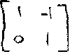

Ch. 2: Grocery-store arithmetic to multiply matrices
We go to the store to buy some things. What shall we buy? OK, we'll buy some
milk(M), some hotdogs(HD) and some buns(B). How much of each? 2 cartons of milk,
8 hot dogs and 10 buns. The milk costs 80'/carton, the hot dogs 30'
each, and the buns cost 12' each. We write this information in matrix form
below. How much does everything cost?
Everything cost 420' or $4.20. One multiplies by going across to the right on the first matrix and down the second matrix, multiplying then adding.
Ch. 3: Steps to do a transformation and Valorie's work
Steps to do a geometric transformation using matrices:
1. Make a shape. The shape I chose was the "dog" (simple, not too many
points).
2. Pick out about 10 points on the shape.
3. Write down the coordinates of these points.
4. Number each of these points to make it easier to keep track of things.
5. Pick a 2x2 matrix using only 1's or 0's or -1's (for now). This will be your
transformation matrix. For example, Valorie chose the matrix: 
6. Multiply each point (as a matrix) by your transformation matrix to get a new
point.
7. Plot each new point and number it, keeping a correspondence with the old
points.
8. Connect the new points as you go, using a color different from the original
shape.
9. Complete all the new points and close the shape (if it's a closed figure),
then look at the new shape carefully. Try to figure out what your matrix did to
the original shape. Then ask questions about the situation.